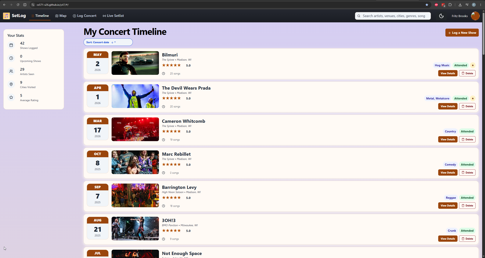

Programming Projects
Throughout school and work, I have completed projects involving backend development, databases, APIs, cloud services, and user interfaces. One project I am currently planning is RigLab, an interactive guitar signal-chain builder designed to teach how guitars, pedals, amplifiers, cabinets, and microphones connect together. I have also worked on SetLog, a concert logging application that allows users to save and organize concerts they have attended.

Professional Projects
In my professional work, I have helped build software for a variety of clients and industries. At Mile Marker, I have developed backend services, automated business workflows, integrated third-party APIs, and helped create an AI-powered document processing system using Microsoft Azure. I have also worked on healthcare scheduling software, nonprofit applications, cloud infrastructure, and database-driven web applications.
Coursework
My coursework has included projects in databases, user interface development, web development, networking, and virtual reality. These assignments have helped me strengthen both my technical skills and my ability to design software that is clear, useful, and easy to understand. This website is another project that gives me practice writing HTML and CSS by hand.